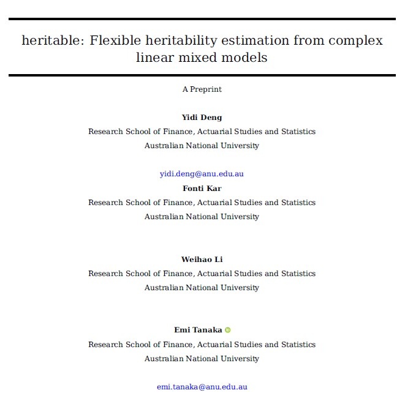
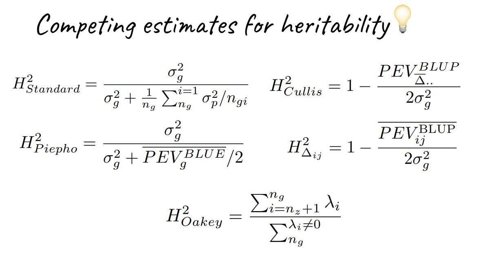

Cullis Oakey Piepho Delta Standard
0.7737597 0.7737597 0.7725430 0.7737597 0.7725517 Flexible heritability estimation from complex linear mixed models
AAGIverse Community Event
Yidi Deng, Fonti Kar, Patrick Li, Emi Tanaka
Research School of Finance, Actuarial Studies and Statistics, ANU
26th June 2026
Project overview
Given genotypes and their observed traits in a trial, heritability helps breeders decide whether the trial contains enough genetic signal for selection.
This project aims to make heritability estimation from LMMs more accessible, flexible, and interpretable.
It brings together:
- 6 commonly used heritability estimators (Paul Schmidt et al. 2019)
- confidence interval based on parametric bootstrap
- support for different model object (
asremlandlme4), with flexible model constructs - G×E extensions for environment-specific and environment-averaged heritability
- a companion paper on estimator relationships and statistical properties
Acknowledgement

Dr. Fonti Kar made the foundational contribution to this project.
Software availability
Thanks to Fonti’s earlier work, heritable is already available on CRAN.
The CRAN version only supports broad-sense heritability estimation on relatively simple model.
The current development version is maintained on GitHub, mainly on the narrow-sense branch (https://github.com/anu-aagi/heritable/tree/narrow-sense).
Manuscript in preparation

Beyond implementing existing estimators
We re-derive different heritability estimators within a unified mathematical framework that:
connects different estimators
provides a comprehensive understanding of their underlying estimands
extends heritability definitions to more flexible model settings
Extensive numerical studies show that heritability estimation is strongly design-dependent.
Heritability as variance partitioning
Heritability estimation is fundamentally about partitioning variation under a LMM.
\mathbf{y} = \mathbf{X}\boldsymbol{\beta} + \mathbf{Z}_g\mathbf{u}_g + \mathbf{Z}_{ge}\mathbf{u}_{ge} + \boldsymbol{\varepsilon}
where
\mathbf{u}_g \sim N(\mathbf{0}, \mathbf{G}_g), \qquad \mathbf{u}_{ge} \sim N(\mathbf{0}, \mathbf{G}_{ge}), \qquad \boldsymbol{\varepsilon} \sim N(\mathbf{0}, \mathbf{R})
This model gives arise to three related variance quantities:
Phenotypic variance: V_P = \mathrm{Var}(\mathbf{d}^\top \mathbf{y})
Genetic variance: V_G = \mathrm{Var}(\mathbf{c}^\top \mathbf{u}_g)
Prediction error variance: V_{\mathrm{PEV}} =\mathrm{Var}\left[\mathbf{c}^\top\left(\mathbf{u}_g - \hat{\mathbf{u}}_g\right)\right], \hat{\mathbf{u}}_g is the BLUP of \mathbf{u}_g
Two classes of heritability estimators
Two classes of estimators emerge from decomposing two different notions of variance:
Phenotypic variance partition
V_P = \mathrm{Var}(\mathbf{d}^\top \mathbf{y}) = \underbrace{\mathrm{Var}(\mathbf{d}^\top \mathbf{Z}_g\mathbf{u}_g)}_{V_G} + \mathrm{Var}(\mathbf{d}^\top \mathbf{Z}_{ge} \mathbf{u}_{ge}) + \mathrm{Var}(\mathbf{d}^\top \mathbf{\epsilon}) H^2 = V_G/V_P
Genetic variance partition
V_G = \mathrm{Var}(\mathbf{c}^\top \mathbf{u}_g) =\mathrm{Var}(\mathbf{c}^\top \hat{\mathbf{u}}_g) + \underbrace{\mathrm{Var}\left[\mathbf{c}^\top\left(\mathbf{u}_g - \hat{\mathbf{u}}_g\right)\right]}_{V_{\text{PEV}}} H^2 = 1 - V_{\text{PEV}}/V_G
Phenotypic variance partition
This class includes the Standard, Delta (BLUE), and Piepho estimators. Different estimator differs by how the linear functionals are defined:
Standard(Falconer 1996): \mathbf{d}_{ij} is defined for a genotype pair (i, j) such that \mathbf{d}_{ij}^\top \mathbf{y} represents the phenotypic mean difference between genotypes i and j: \mathbf{d}_{ij}^\top \mathbf{y} = \bar{y}_i - \bar{y}_j.Delta (BLUE)(P. Schmidt et al. 2019): same pairwise idea, but \mathbf{d}_{ij} maps \mathbf{y} to BLUE contrasts from a counterpart model where genetic effects are fitted as fixed: \mathbf{d}_{ij}^\top \mathbf{y} = \hat{\beta}_{g_i} - \hat{\beta}_{g_j}.Piepho(Piepho and Mohring 2007): aggregated \Delta^{\text{BLUE}} heritability for isotropic \mathbf{G}_g
Genetic variance partition
Similarly, the Delta (BLUP), Cullis, and Oakey estimators differ in how they define linear functionals of genetic effects.
Delta (BLUP)(P. Schmidt et al. 2019): \mathbf{c}_{ij} is defined for genotype pair (i, j) for genetic effect contrast: \mathbf{c}_{ij}^\top\mathbf{u}_g = u_{g_i} - u_{g_j}Cullis(Cullis et al. 2006): aggregated \Delta^{\text{BLUP}} heritability for isotropic \mathbf{G}_gOakey(Oakey et al. 2006): \mathbf{c} is defined in a model dependent way to maximize heritability: \arg\max_\mathbf{c} 1- \frac{\mathrm{Var}\left[\mathbf{c}^\top\left(\mathbf{u}_g - \hat{\mathbf{u}}_g\right)\right]}{\mathrm{Var}(\mathbf{c}^\top \mathbf{u}_g)}
Back to the original formulation

We can define our own linear functionals
The calculation follows the same principle as long as the genetic effect of interest can be isolated as a random effect component.
\mathbf{y} = \mathbf{X}\boldsymbol{\beta} + \color{red}{\mathbf{Z}_g\mathbf{u}_g} \color{black} + \mathbf{Z}_{ge}\mathbf{u}_{ge} + \boldsymbol{\varepsilon}
Extension to G×E is straightforward
G×E effects can be incorporated into the heritability definition by defining and decomposing variance of the full random effect vector \mathbf{u} = \begin{bmatrix} \mathbf{u}_g \\ \mathbf{u}_{ge} \end{bmatrix}, Let \tilde{\mathbf{c}} be a linear functional defined on \mathbf{u}, then H^2_{\text{GVP}} = 1 - \frac{V_{\text{PEV}}}{V_G} = 1- \frac{\mathrm{Var}\left[\tilde{\mathbf{c}}^\top\left(\mathbf{u} - \hat{\mathbf{u}}\right)\right]}{\mathrm{Var}(\tilde{\mathbf{c}}^\top \mathbf{u})}.
This extension can be applied also to phenotypic variance partitioning.
Stratified and marginal heritability
Stratified heritability
We can define stratified heritability with a functional \tilde{\mathbf{c}}_{ijk} that contrasts genetic effects within an environment k, such that \tilde{\mathbf{c}}_{ijk}^\top\mathbf{u} = u_{g_i} + u_{ge_{ik}} - (u_{g_j} + u_{ge_{jk}})
Marginal heritability
We can also define marginal heritability by \tilde{\mathbf{c}}_{ij} that contrasts genetic effects averaged across environments, such that \tilde{\mathbf{c}}_{ij}^\top\mathbf{u} = \left( u_{g_i} + \sum_k \mathbb{E}[z_{ge_{ik}}] u_{ge_{ik}} \right) - \left(u_{g_j} + \sum_k \mathbb{E}[z_{ge_{jk}}] u_{ge_{jk}} \right)
Usage
There are three important arguments for the key functions H2 and h2:
target: specifying the model component on which heritability is estimatedmarginal: whether to compute marginal heritabilitystratification: specifying the environmental strata at which heritability is estimated
We use a lettuce breeding dataset for resistance to downy mildew for demonstration (Hadasch et al. 2016)
Board-sense heritability
Main heritability
Marginal heritability
Stratified heritability at location L1
Narrow-sense heritability
Same usage, differs in the modelling stage
We model known additive genetic variance structure using the vm special in asreml:
An additional argument source is required by h2:
Confidence Interval
To compute CI, simply run confint on saved heritable objects
2.5 % 97.5 %
Cullis 0.8323671 0.9374830
Oakey 0.5911317 0.7334316
Piepho 0.8028306 0.9190309
Delta 0.8283260 0.9346294
Standard 0.7888382 0.9111070The function supports parallel computing to accelerate parametric bootstrap.
Works for complex models
Deep nesting
Cullis Oakey Piepho Delta Standard
0.5793787 0.5969357 0.4619369 0.5793787 0.4592437 Residual modeling
Future development
More variance structures
heritable needs to parse asreml variance modeling specials and convert variance estimates into variance matrices.
Some structures are already supported
More structures can be added
Custom heritability definitions
Future versions could allow users to provide their own linear functionals, such as \mathbf{d} or \mathbf{c}.
This would support custom heritability definitions for user-defined contrasts.
More model objects
Patrick is working on glmmTMB
Reference
Cullis, Brian R, Alison B Smith, and Neil E Coombes. 2006. “On the Design of Early Generation Variety Trials with Correlated Data.” Journal of Agricultural, Biological, and Environmental Statistics 11 (4): 381–93.
Falconer, Douglas Scott. 1996. Introduction to Quantitative Genetics. Pearson Education India.
Hadasch, Steffen, Ivan Simko, Ryan J Hayes, Joseph O Ogutu, and Hans-Peter Piepho. 2016. “Comparing the Predictive Abilities of Phenotypic and Marker-Assisted Selection Methods in a Biparental Lettuce Population.” The Plant Genome 9 (1): plantgenome2015–03.
Oakey, Helena, Arūnas Verbyla, Wayne Pitchford, Brian Cullis, and Haydn Kuchel. 2006. “Joint Modeling of Additive and Non-Additive Genetic Line Effects in Single Field Trials.” Theoretical and Applied Genetics 113 (5): 809–19.
Piepho, Hans-Peter, and Jens Mohring. 2007. “Computing Heritability and Selection Response from Unbalanced Plant Breeding Trials.” Genetics 177 (3): 1881–88.
Schmidt, Paul, Jens Hartung, Jörn Bennewitz, and Hans-Peter Piepho. 2019. “Heritability in Plant Breeding on a Genotype-Difference Basis.” Genetics 212 (4): 991–1008. https://doi.org/10.1534/genetics.119.302134.
Schmidt, P, J Hartung, J Rath, and H-P Piepho. 2019. “Estimating Broad-Sense Heritability with Unbalanced Data from Agricultural Cultivar Trials.” Crop Science 59 (2): 525–36.